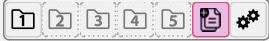
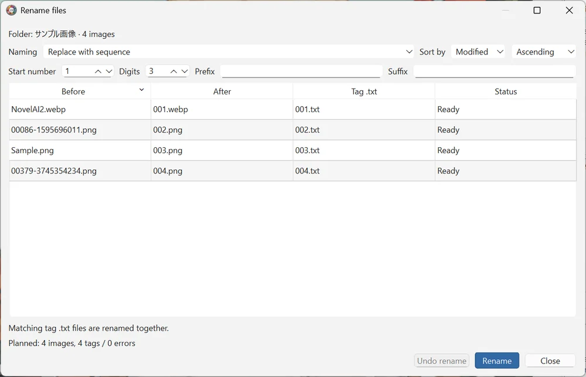
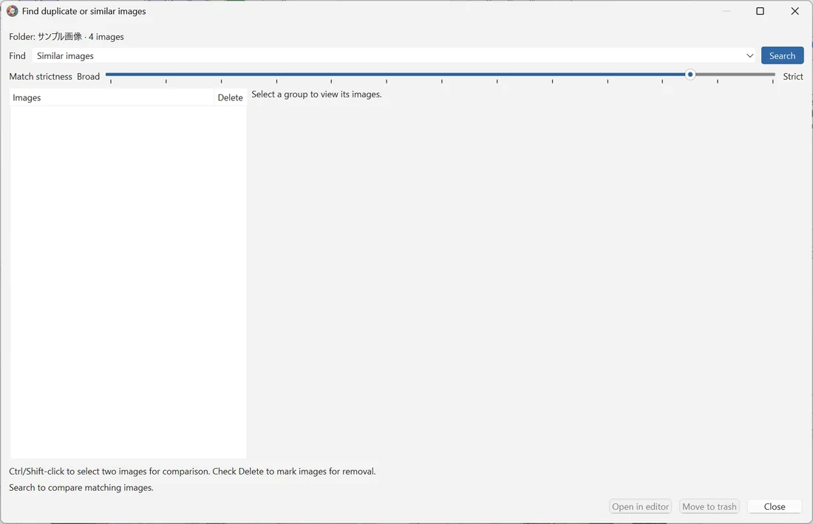

Sorting & organizing
Sort images into folders with a single key while you browse, rename files in bulk, and find and clean up duplicate or similar images.
Sorting & bookmarks

123
| 1Slots 1–5 | Left click (or keys 1–5) moves / copies the image to the registered folder. Right click (Ctrl+1–5) opens that folder. If an EXE is registered, the image opens in that app. |
| 2Move / copy | On: copy, off: move. |
| 3Folder settings | Register folders or EXEs (e.g. CLIP STUDIO) for slots 1–5. |
Confirmation messages when moving or deleting can be skipped with "Skip confirmation when deleting or sorting images" in Settings.
Buttons at the end of the toolbar
1234
| 1Image insert | Inserts assets on the canvas (see the Paint page). |
| 2Watermark | Adds a text or image watermark (see the Paint page). |
| 3Rename files | Renames images and their tag .txt files together. |
| 4Find duplicate or similar images | Finds and compares duplicate or similar images in the folder. |
Rename files

12345678| 1Naming | Replace with sequence / Sequence before original name / Sequence after original name / Add text only. |
| 2Sort by | Created / Modified / Name, ascending / descending. Clicking a column header also switches it. |
| 3Start number / digits | Starting value and number of digits for the sequence. |
| 4Prefix / suffix | Text added before / after the name. |
| 5Preview | Shows before / after and the matching tag .txt names that change with them. |
| 6Status | Ready / unchanged / error, etc. |
| 7Undo rename | Reverts the last rename. |
| 8Rename | Renames as previewed. Extensions are preserved. |
Find duplicate or similar images

1234567| 1Find | Duplicate images (identical content / pixels) or similar images (candidates that look alike). |
| 2Search | Searches the folder. Only saved files are included. |
| 3Match strictness | Stricter to the right, broader to the left. |
| 4Groups | Matches found. Check "Delete" on the images you want to move to the trash. |
| 5Compare | Ctrl / Shift+click two images to compare them side by side (wheel to zoom, both sides linked). Images of the same size can highlight differences in red. |
| 6Open in editor | Opens the chosen image in the main window. |
| 7Move to trash | Moves the checked images to the trash. |
Similar images are only candidates that look alike, not guaranteed to be the same. Compare before deleting.